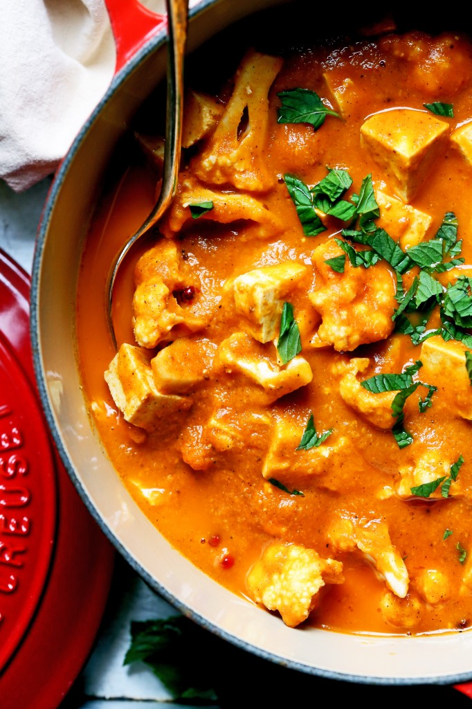
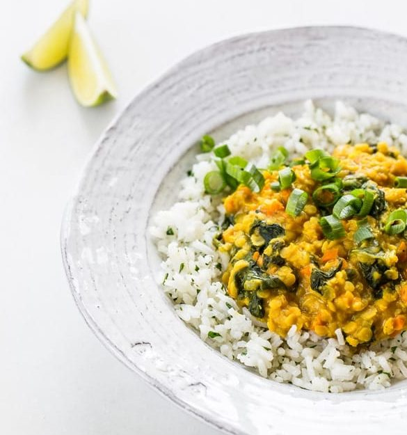
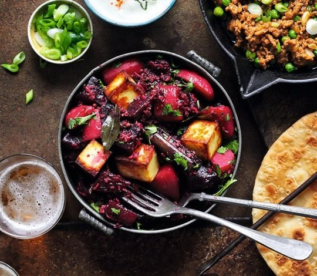
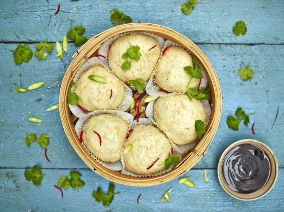
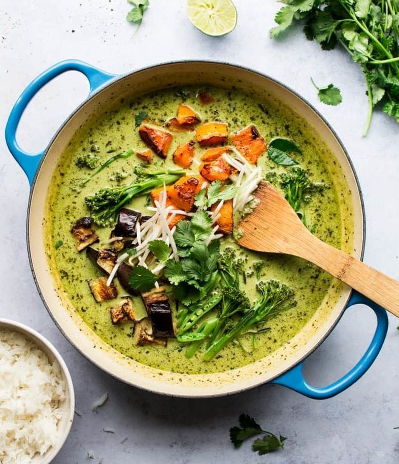

| S.No | Dish | Image | Price |
|---|---|---|---|
| 1 |
Tofu Cauliflower Korma This korma is the perfect exotic vegan recipe to make at home! It’s a mixture of creamy, delicious coconut and subtle spice. The addition of the tofu really bulks the curry, replacing meat in traditional recipes. |
 | $12.99 |
| 2 |
Golden Lentil Dal with Cilantro Speckled Basmati The best thing about this exotic vegan recipe? The leftovers! Have you ever eaten Indian food the next day? It’s just as good, trust me so if you make too much of this, you can enjoy it for a few days, hurrah! This dal is creamy from the coconut giving it a real rich texture. |
 | $6.99 |
| 3 |
Beetroot & ‘Paneer’ Curry Healthy eating really allows you to get creative when re-inventing popular cuisines to suit your lifestyle. And this beetroot and ‘paneer’ curry is just bursting with delicious colours and tasty flavours. Though paneer is usually cheese, this one uses tofu instead, so it’s absolutely vegan friendly. This dish holds so much goodness from the beetroot, potatoes and the array of seasoning! You could even go one step further and make some vegan naan bread to pop it up. |
 | $8.99 |
| 4 |
Dim Sum Buns When I was last in Hong Kong, there were a lot of foods I was excited to try. One that I fell head over heels in love with was dim sum. Doughy steamed balls oozing with delicious fillings – yum! And today, this is one of my very favourite exotic vegan recipes. |
 | $4.99 |
| 5 |
Thai Green Curry Of all the exotic vegan recipes, this is another one of my faves! (after anything Mexican, of course). Green curry is probably the most famous of all the Thai dishes. While traditional recipes use chicken, shrimp and fish sauce, this veggie version eliminates all the animals. It still looks delicious and creamy, but is packed out with an abundance of healthy vegetables. Want it a little more filling? You could add some tofu in there, but trust me – this dish is hearty enough without. |
 | $20.99 |